Izraelben 4 hét alatt szabadulnak meg a prosztatagyulladástól egyszer és mindenkorra (a módszer lenetebb van
leírva)
Eközben a Kelet-Európa országaiban a korrupt szakemberek összejátszva a
gyógyszertárakkal terjesztik a hatástalan készítményeket és
évi szinten csalják ki a pénzt a férfiaktól
A prosztatagyulladás az egyik legelterjedtebb betegség a 40 év feletti
férfiaknál,
ezzel együtt a szakemberek felhívják a figyelmet arra, hogy egyre elterjedtebb lesz
a fiatalok körében is. Egyre több 30, 25 és még 20 éves férfi is
szembesül ilyen "problémákkal".
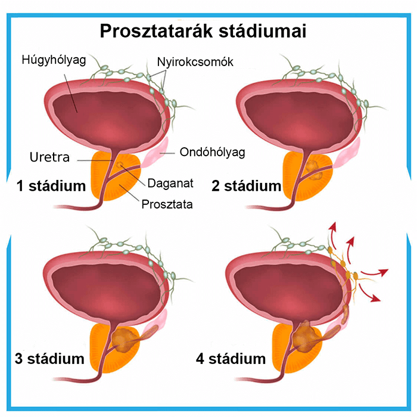
Az urológus szakemberek a betegség népszerűségét annak előfeltételeivel
magyarázzák. Azok a férfiak tartoznak a kockázati csoportba:
akik passzív életmódot folytatnak;
akik rendszertelen nemi életet élnek;
akiknek káros szokásai vannak;
akiknek fertőző betegségei vannak;
akiknek örökletes hajlama van;
akik sokat stresszelnek;
akik hipotermiától szenvednek.
Ha ismerősnek találta az előfeltételeket, akkor valószínűleg ön is szembesülhet prosztataproblémákkal.
Minél több az előfeltétele van, annál hamarabb bekövetkezhet. Ez csak idő kérdése.
A prosztatagyulladás jelei - ellenőrizze magát:
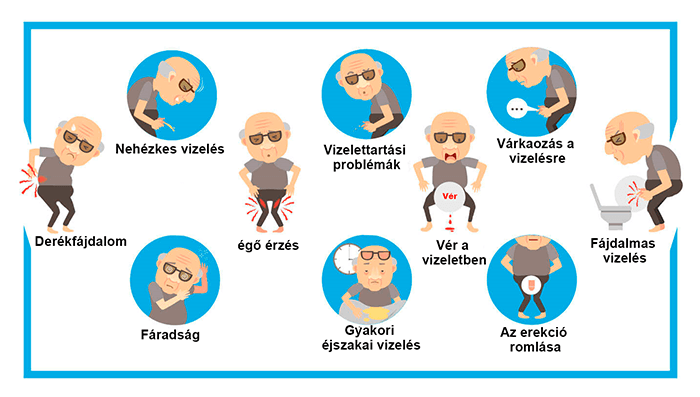
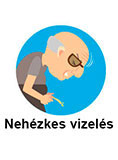
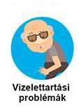
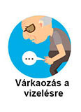
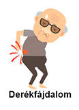
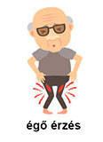
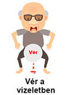
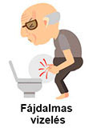
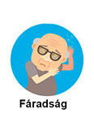
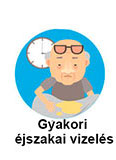
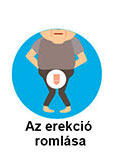
Az urológus szakemberek szerint
a 40 év feletti férfiak több mint 55%-a
szembesül a prosztata mirigyének problémájával valamilyen formában.
A prosztatagyulladás diagnosztikája nem függ annak kategoriájától (akut, kronikus,
bakteriális, tünetmentes), de a jelek nagy része hasonló:
Húzó vagy szúró fájdalmak:
alhas tájékán, a herezacskókban;
a perineumban vagy a péniszben.
Vizeletürítési zavar:
gyakori vizelés, égő érzés a húgycsőben;
"nem teljesen kiürült húgyhólyag" érzése;
vizeletürítési nehézségek (a vizelet sugara gyenge).
Nemi diszfunkció:
csökkenő nemi vágy;
az erekció időtartamának.
Ejakulációs zavar:
korai magömlés vagy probléma a magömlés elérésével;
gyenge ejakuláció.
A szervezet fokozott fáradtság és ingerlékenység érzete.
Még az életminőség nyilvánvaló romlása ellenére is
sok férfi éveken át él együtt a prosztatagyulladással,
nem gyanítva, hogy visszafordíthatatlan következményekkel járhat,
nem csak kellemetlenségeket okoz.
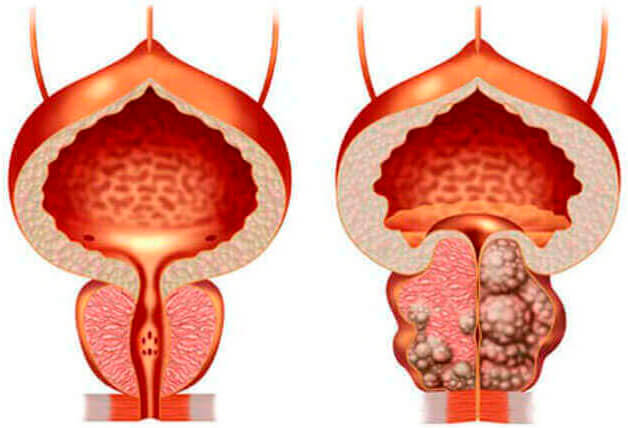Az elhanyagolt prosztatagyulladás gyakran prosztata
adenomához vezet ("férfi halál")
Részben meg lehet őket érteni, a prosztata diagnosztizálásának
folyamata minden férfiban komoly ellenszenvet és zavart vált ki. Sőt,
az esetek túlnyomó többségében a prosztatagyulladás
diagnosztizálása után a szakemberekhez tett látogatások
évenkénti büntetéssé válnak. Az szakemberek a legnyilvánvalóbb
megnyilvánulásokat „gyógyszerészek által ajánlott” készítmények
segítségével enyhítik, de minden egyes hipotermia vagy a rutin
hormonális zavar esetén a prosztatagyulladás újra felbukkan.
Hogyan harcolnak a prosztatagyulladással nálunk (és hogyan NEM KELL
küzdeni)
Ha Kelet-Európa egyik országában él, nehéz megszabadulni a prosztatagyulladástól
még akkor se, ha nagyon akarja.
Ezekben az országokban a prosztatagyulladással szemben elavult módszerekkel próbálnak harcolni, amelyek
a következők:
A férfi elmegy a klinikára.
A szakember megvizsgálja, felír egy csomó laboratóriumi vizsgálatot.
Néha nincs is rá szükség, de mindenesetre muszáj, hátha kimutatnak
valamit, ami miatt felírhatnak valami készítményt (és majd pénzt tudnak keresni vele).
Természetesen, ezek a vizsgálatok sok pénzbe kerülnek.
A vizsgálat után a szakember prosztatagyulladást diagnosztizál és
felírja az "ajánlott kúrát". Olyan készítményeket írnak fel, amelyek
célja a betegség akut tüneteinek enyhítése, nem pedig a betegség okától
való megszabadulás. És természetesen a szakember olyan vállalatok termékeit
ajánlja, amelyek képviselői a legtöbb pénzt hozták neki.
Ezek a termékek mindenki számára ismertek.
A jelek enyhítésére javasolt készítményeken kívül a szakemberek mindig
rektális
prosztata masszázst írnak fel vagy hasonló hatású géppel történő terápiát.
Ez megalázó és nagyon kellemetlen eljárás - a masszázst ujjal
végzik a férfi
végbélnyílásán keresztül. A masszázst általában 10-14
alkalommal kell megismételni.
És természetesen minden alkalomért fizetni kell.
Európában ezt a fajta masszázst már 20 éve nem alkalmazzák, mivel a
modern
készítmények teljes mértékben képesek megoldani a gondot!
A fő terápia mellett a szakemberek gyakran készítményeket írnak fel a szexuális
funkciók javítására, a sperma minőségének elősegítésére,
a szervezet antibiotikumok utáni "helyreállítására", stb.
Ennek eredményeként a prosztatagyulladás egyszeri terápiája nagyon sokba kerül.
Ezzel együtt csak a betegség fő jelei szűnnek meg. A krónikus
prosztatagyulladás általában továbbra
is fennáll, és ismét kiújul, mihelyt az ember megfázik, vagy már nem
tartja be
a szakember által felírt étrendet. Ennek eredményeként a férfi egyre több pénzt
költ a kúrákra,
ezzel meggazdagítva a magán patikákat és a gyógyszeripari cégeket. Ez az alapja a kelet-európai
üzletágnak.
Hogyan harcolnak a prosztatagyulladással az USA-ban és Európában
(hogyan KELL küzdeni)
A nyugati országokban ahhoz, hogy megszadabuljunk a prosztatagyulladástól, nem is kell
szakemberhez fordulni.
Az első jelek megjelenése után elegendő, ha az ember elmegy a gyógyszertárba és
megvásárolja
az évtizedek óta bevált szert - egy poliaktív biogén komplexet, amelynek
hatékonysága
már a 80-as években bebizonyosodott. Természetesen a módszer biztonságának
számos
ellenőrzése után - a komplex az Egyesült Államokban és Európában az
egyik népszerű
prosztatagyulladás elleni módszerré vált. Természetesen egy ilyen termék nem előnyös
a
kelet-európai gyógyszertári maffia számára – sokkal jövedelmezőbb
rákényszeríteni az embert a fájdalom tüneteinek éves
megszüntetésére,
mint a betegség olcsó, mindenki számára hozzáférhető
termék segítségével történő megszüntetésére.
Országunkkal szemben az USA-ban és Európában magasan fejlett a
biztosítás.
A biztosítótársaságoknak nem áll érdekükben, hogy minden második
férfi kétszer egy évben ellátogasson a szakemberhez — a
biztosítótársaságoknak
ezt ki kell fizetni, a szakemberek fizetése náluk nagyon kicsi. Ezért az az érdekük,
hogy a terápiát
a lehető leghatékonyabbá és gyorsabbá tegyék. A nyugati országokban
a biztosítótársaságok érdekei legyőzték a gyógyszertári
maffiát,
és a hétköznapi férfiak szerencséjére a prosztatagyulladás
elleni termék mindig kapható...
Javulni fog a helyzet?
Sajnos nem várhatunk pozitív változásokat a magán gyógyszertárak és
klinikák
műküdésében – a gyógyszerészeti üzletnek rengeteg pénze van, és a legmagasabb
posztokat betöltő
tisztviselők részesedést kapnak belőle.
Ma azonban egyáltalán nem érdemes etetni a gyógyszertárakat. Minden az interneten
keresztül,
speciális weboldalakon rendelhető meg. Nem olyan rég az egyik leghatékonyabb nyugati
készítmény – az Szlovéniában is megjelent. Szinte
rögtön a megjelenése után elnyerte az emberek szeretetét.
Hasonlítsuk össze, hogy az miben különbözik a
gyógyszertárak által kínált népszerű termékektől, amelyek
a prosztatagyulladással szembeni küzdelemre szolgálnak.
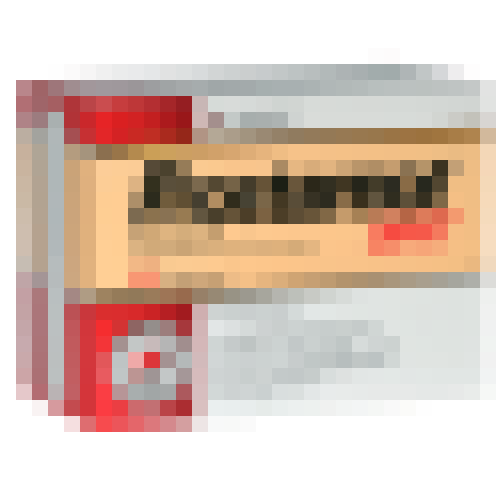
Egyéb készítmények
Kiszerelés:
20 kapszula buborékcsomagolásban.
Végbélkúp: 10 darab csomagonként.
Hatás:
Segít megszüntetni a prosztatagyulladást már
a 30 napos kúra után. Tartós eredmény. Általában a probléma nem tér vissza.
Csupán enyhíti a prosztatagyulladás akut tüneteit – a fájdalmat és a
vizelési zavarokat.
További hatás:
º Hozzájárul a libidó növeléséhez;
º Képes serkenteni a fő férfi hormon - a tesztoszteron - szintézisét;
º Jó hatással van a hormonháztartásra; º Segít normalizálni a
húgyhólyag működését; º Bevált termék a
urogenitális rendszer fertőzései ellen.
A széklet lágyulása, fokozott bélmozgás.
Mellékhatások, káros hatás a szervezet
számára:
Általában nincsenek. Természetes összetevők alapján elkészült.
º Gyakori használata rosszindulatú elváltozásokat
okozhat a prosztatában; º Csökkenti a potenciát; º
Problémákat okoz a belekben; º Legyengíti az immunrendszert,
hozzájárul az allergia kialakulásához; º Erős fájdalmat idéz
elő a gyomorban.
Működési elv:
A természetes összetevők speciálisan kiválasztott
összetételével átfogóan hat a prosztatára,
gyulladásgátló
és erősítő hatást biztosít. Segít eltávolítani a prosztata
összes patogén
flórát, javítva a prosztata szerkezetét és
működését. Krónikus, pangásos és bakteriális
prosztatagyulladás
leküzdésére ajánlott.
Átmenetileg enyhíti a fájdalmat a prosztatában, elfedi a betegség lefolyását.
Azonban a készítmény hatásának elmúlásával, a betegség újra súlyosbodik.
Összetétel:
Természetes növényi kivonatok: csalán kivonat, tőzegáfonya
kivonat,
kamilla kivonat és fenyőfa kivonat.
Samprost, kalcium-sztearát-monohidrát, krospovidon,
trietil-citrát, titán-dioxid és egyéb vegyi anyagok.
Az a hivatalos weboldalon vásárolható meg
Már most nagyszabású kampányt indítottak ezen készítmény ellen,
amely mögött az ország legnagyobb magán gyógyszertári láncai állnak.
Talán hamarosan el is tűnik a forgalomból. Javasoljuk, hogy minden férfi minél hamarabb
vásárolja meg az terméket.
Hozzászólások
Orosz Erik
Köszönöm az érdekes cikket!
Szörnyű, hogy a gyógyszeripari cégeket, a gyógyszertári láncokat és a gátlástalan
szakembereket kollektív bűnösség köti össze.
Még jó, hogy az internet még elérhető.
Megrendeltem az terméket. Remélem, hogy segít.
Jónás György
Teljesen egyetértek! – csodaszer. Montenegróban vettem, amikor tavaly
nyáron ott nyaraltam. Azelőtt kb. 10 évig biztosan szenvedtem már a krónikus
prosztatagyulladástól. Próbáltam megszabadulni tőle, de ahogy fentebb
leírták, a terápia csak átmeneti hatással volt.
Az használatával a prosztatagyulladás elmúlt. Már több mint
fél éve nem újult ki. Korábban erről csak álmodni tudtam. Minden
férfinak ajánlom az terméket. Segíteni fog!
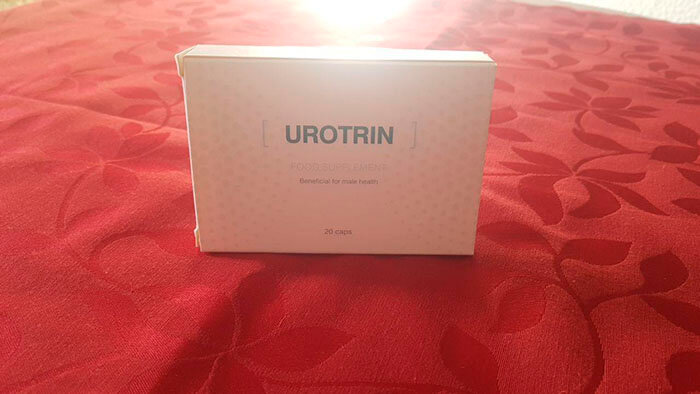
Pap Csaba
Megrendeltem. Az tényleg segített))) Kellemesen meglepődtem.
Köszönöm!
Halász Zsombor
Nekem is van tapasztalatom ezt a készítményt illetően. A megadott
weboldalon vettem. A lényeg az, hogy segített megszabadulni a
prosztatagyulladástól alig több, mint 1 hónap alatt masszázs
nélkül.
Jónás Elemér
Megrendeltem.
Fazekas Árpád
Néztem egy műsort az egyik csatornán a gyógyszerüzletről. Szöernyű...
Ott is beszéltek erről a készítményről. Arról, hogy egyelőre még
kapható,
de hamarosan akár el is tűnhet. Vegyétek meg, ameddig még lehet.
Lukács András
Krónikus prosztatagyulladásom van 28 éves korom óta. Most 41 vagyok.
Ez idő alatt többször elvégeztem a kúrát, de időnként súlyosan romlott az állapotom.
Legutóbb a szakemberek alig tudtak megmenteni. Azt mondták, hogy
akár enyhe prosztatagyulladás prosztatarákká fajulhat. Ezért azt tanácsolom
mindenkinek, akinek prosztatagyulladása van, hogy szabaduljon meg tőle a lehető leghamarabb. Ez
egy nagyon veszélyes betegség.
Pappné Eszter
Meg kell rendelnem a férjemnek. Köszönöm!
Varga Gyula
Megvettem. És ez tényleg segít. Köszönet a gyártóknak!
Bogdán Domokos
az egyik legjobb készítmény! Egyetértek a cikk szerzőjével és a hozzászólókkal, akik dícsérték. Körülbelül 3 hónapja használtam. A prosztatagyulladásom elmúlt! Most minden visszatért a normális kerékvágásba
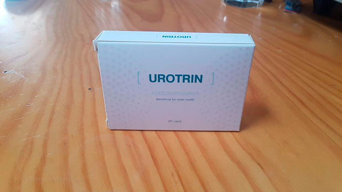
Orsós Ábel
+500. Kiváló termék.
Magyar Norbert
Elolvastam a plusz információkat az termékről a weboldalon. Lenyűgöző!
Megrendeltem. Megígérték, hogy 5 nap múlva átvehetem a postán.
Kényelmes.
Dudás Donát
Srácok, ez tényleg nem semmi! Múlt hónapban vettem meg. Mostanra a
prosztatagyulladásnak
egy jele se maradt meg. Elmúlt a fájdalom, nem szaladgálok olyan gyakran a
vécére, vizeléskor eltűnt a szúró fájdalom. Plusz jelentősen javult a
potenciám és a szex időtartama növekedett. Remekül érzem magam. A
készítmény hatékonysága kellemesen meglepett.
Faragó Béla
Köszönöm!
Aza Kauffman, az izraeli bioegészségügyi készítmények intézetének a vezetője, az urológiai tanszék vezetője
A prosztatagyulladás leküzdésének nem invazív módszerét, amely magában foglalja a fenyőkivonat alapú természetes kiegészítők használatát, először Aza Kauffman urológus szakember fedezte fel az izraeli bioegészségügyi készítmények intézetének kutatásai során.
Aza Kauffman bebizonyította a módszer 98%-os hatékonyságát és elkezdte ajánlani a természetes fenyőkivonaton alapuló készítményeket az akut és krónikus prosztatagyulladásban szenvedő személyeknek.
Az utóbbi években az ilyen kivonatot tartalmazó készítményeket elkezdték használni először Izraelben, majd sok más országban is.
Az egyik ilyen készítmény, amelynek hatékonyságát és biztonságát elismerték, az néven kapható.


Orosz Erik
Köszönöm az érdekes cikket! Szörnyű, hogy a gyógyszeripari cégeket, a gyógyszertári láncokat és a gátlástalan szakembereket kollektív bűnösség köti össze. Még jó, hogy az internet még elérhető. Megrendeltem az terméket. Remélem, hogy segít.